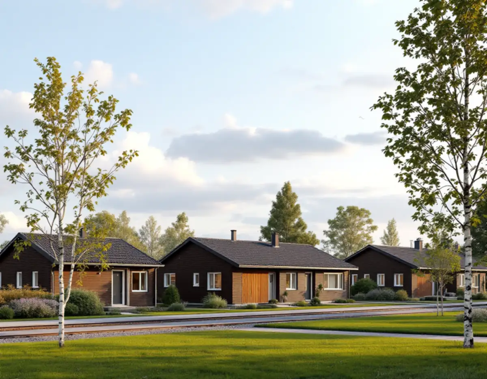
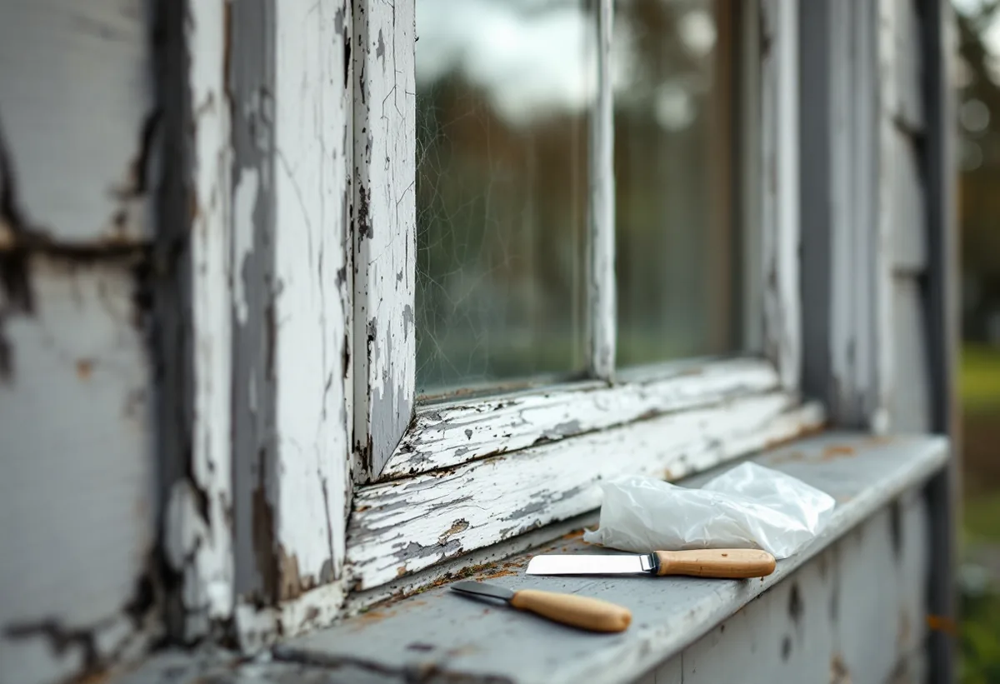
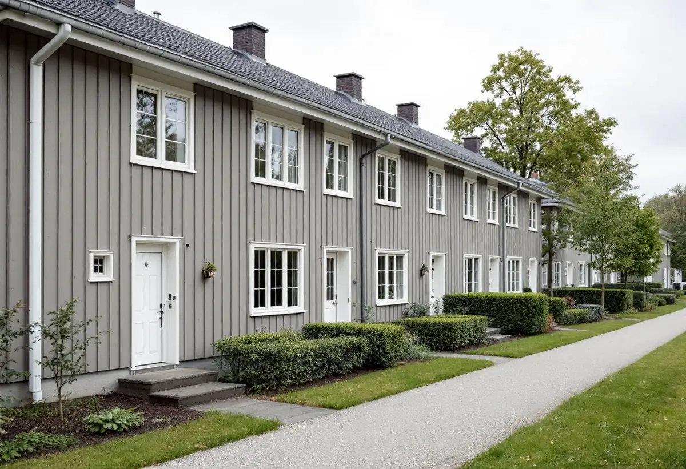

Platsbesök
Vi tittar på byggår, tidigare renoveringar, panel, kitt och puts.
Lindholmen vid Roslagsbanan är ett småskaligt stationssamhälle där bebyggelsen huvudsakligen har vuxit fram sedan 1970-talet. Geal Entreprenad AB målar om fasader i hela Vallentuna och tar reda på vad huset är byggt och målat med innan något skrapas.

Den fördjupade översiktsplanen för norra Vallentuna och Lindholmen beskriver den del av Lindholmen som ligger inom planen som främst det småskaliga stationssamhälle som har vuxit fram kring Roslagsbanan. Bebyggelsen har huvudsakligen tillkommit sedan 1970-talet och består främst av villor och gruppbyggda småhus. Senast har området Kulla byggts. Utvecklingen började ändå långt tidigare, med den medeltida sätesgården och dess ägor.
Planen återger kommunens kulturmiljöprogram, där Lindholmen hör till exempelområdena med höga kulturhistoriska kvaliteter. I nordvästra Lindholmen finns dessutom ett område med mycket höga kvaliteter och ett stort antal fornlämningar. Enligt programmets riktlinjer ska antikvarisk expertis anlitas i ärenden som berör exempelområdena, och vid förändringar bör hänsyn tas till bland annat den befintliga miljöns skala och bebyggelsemönster.

Ett hus från 1970-talet ligger inom den period då asbest användes i byggmaterial. Boverket skriver att asbest förbjöds inom byggsektorn 1982, och att en byggnad som är uppförd mellan 1940 och 1980 sannolikt innehåller asbest någonstans. Bland exemplen på var den kan finnas nämns fönsterkitt och puts, alltså just det som skrapas, slipas och lagas när en fasad förbereds för målning.
Så länge asbesten är inkapslad eller sitter i bunden form är den ingen fara, men om materialet bearbetas så att det dammar kan mycket små fibrer andas in. Enligt Boverket är provtagning och analys det enda säkra sättet att veta, och uppgifter kan också finnas i bygglovshandlingarna. Därför tittar vi på husets byggår och tidigare renoveringar vid platsbesöket, och om kitt eller puts kan innehålla asbest tas prov innan vi börjar skrapa.
Ett hus från 1970-talet kan ha målats med moderna täckfärger. Boverket beskriver hur träpaneler började strykas med tät plastfärg, och att akrylatfärg kräver alkydoljegrund. När grunden inte användes fuktades panelen upp kraftigt av regn och fick fuktskador. Det är ett skäl att undersöka panelen nertill och runt fönstren innan ny färg läggs på, och att byta bräder som har tagit skada.
Länsstyrelsernas blad om målning utomhus på trä påpekar att ett hus kan ha linoljefärg, alkydoljefärg eller plastfärg i olika lager, och att flagor, sprickor eller blåsor ofta tyder på plast- eller alkydoljefärg. Bladet varnar också för högtryckstvätt, eftersom den pressar in vatten i väggen. Vi tvättar därför fasaden med låg vattenmängd, låter panelen torka och väljer en färg som passar det som redan sitter på väggen.
Vallentuna kommun skriver att ommålning av ett en- eller tvåbostadshus inte kräver bygglov, men att ändringar ska göras varsamt och anpassas till byggnadens värden. Lov krävs om fastigheten ligger inom ett kulturhistoriskt särskilt värdefullt område eller om huset i sig är kulturhistoriskt särskilt värdefullt. En ansökan ska då innehålla en situationsplan, fasadritningar i skala 1:100 och en redovisning av material och kulörer med NCS-koder, och äldre ritningar kan beställas ur kommunens arkiv om de finns.
I Lindholmen, där kulturmiljöprogrammet ser till skala och bebyggelsemönster, är det klokt att ta kontakt med kommunen innan en hel husgrupp får en ny kulör. Vi tar fram kulörer och NCS-koder per fasaddel, så att uppgifterna kan användas direkt i en ansökan. Mer om gårdar och rödfärg finns under målare i Vallentuna, om permanentade fritidshus under fasadrenovering i Vallentuna och om målning i stort under målare.

Vi tittar på byggår, tidigare renoveringar, panel, kitt och puts.
Kan kitt eller puts innehålla asbest tas prov innan något bearbetas.
Förarbete, färgtyp, antal strykningar och eventuella panelbyten står var för sig.
Fasaden tvättas skonsamt och panelen får torka innan grundning.
Grundning av bart trä och strykning i lämpligt väder.
Vi går runt huset med dig och bättrar det som behövs.
Äger du villan eller radhuset ger målning av fasaden och byggnadsställningen rotavdrag, och är ni flera ägare kan ni dela på avdraget. Ingår huset i en bostadsrättsförening är det annorlunda: Skatteverket godkänner inte arbete på gemensamma ytor som tak och fasader i en bostadsrätt.
Avdraget är högst 30 procent av arbetskostnaden, högst 50 000 kr per person och år och högst 75 000 kr tillsammans med rutavdrag. Färg, material och resor ger inget avdrag. Geal drar avdraget direkt på fakturan där det gäller.
Hur stor fasaden är, om prov behöver tas på kitt eller puts, hur mycket panel som behöver bytas och hur många fönster som ska kittas och målas väger tyngst. Efter ett gratis platsbesök får du ett skriftligt kostnadsförslag.
Fasad, fönster och invändig målning.
Målare i Stockholm →Takbyte, takbesiktning och plåtarbeten.
Takläggare i Vallentuna →Villaområden och gårdar.
Takrenovering i Vallentuna →Inom eller utanför plan, avlopp och brunn.
Attefallshus i Vallentuna →Nytt våtrum, Roslagsvatten och egen brunn.
Badrumsrenovering i Vallentuna →Ritningar, grannar och kommunens mark.
Byggföretag i Vallentuna →Fritidshus, stationssamhällen och villor i Vallentuna.
Fasadrenovering i Vallentuna →Flygbuller, glasval och lov i Vallentuna.
Fönsterbyte i Vallentuna →Fönster i tegelvillan, fog och bågar.
Fönsterrenovering i Vallentuna →Golv på platta och golvvärme i villan.
Golvläggare i Vallentuna →Slipa och laga gamla golvplank.
Golvslipning i Vallentuna →Utbyggda kök, villor och gårdar.
Köksrenovering i Vallentuna →Gårdar, fritidshus och villor i Vallentuna.
Målare i Vallentuna →Rännor, plåttak och uthus i Vallentuna.
Plåtslagare i Vallentuna →Uthus, uterum och fritidshus.
Snickare i Vallentuna →Lovfrågan, skorstenen och arkivet.
Takbyte i Vallentuna →Spännpapp och papperstapet.
Tapetsering i Vallentuna →Ritningar, nivåer och arkivet.
Tillbyggnad i Vallentuna →Radon när huset byggs om.
Totalrenovering i Vallentuna →